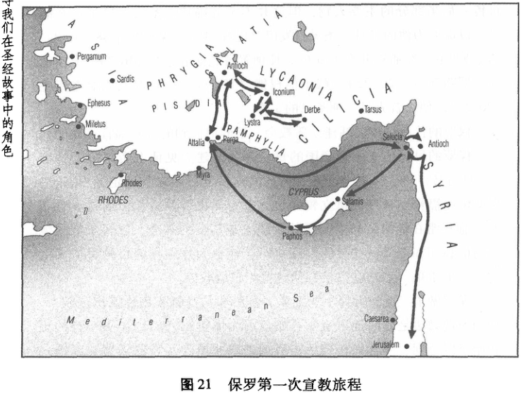
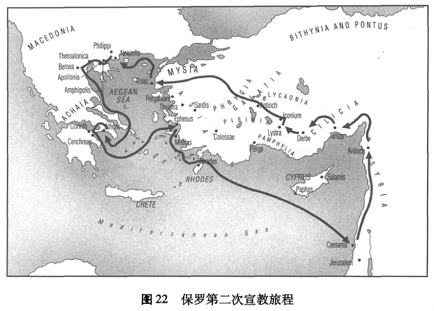
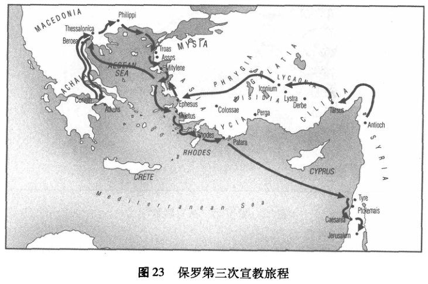
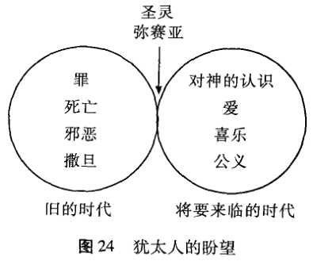
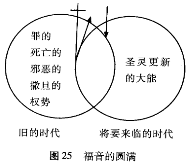

上帝拯救工作的目标是复原他的创造，清除罪对造物的影响。耶稣已经以他的死战胜了罪，并且通过他的复活开创了拯救和复原的新纪元。王国的盛宴已经准备待用了，但尚未开始。更多的人必须首先聚在宴会的桌前，以便他们也能品味即将到来的时代那复新一切的权能。耶稣首次降临之后和再次降临之前的这个中间时段，是得荣耀的基督、圣灵和教会担负使命的时期。
从耶路撒冷到罗马
路加是四个《福音书》作者中唯一续写耶稣死和复活之后故事的一位。《使徒行传》实际上是《路加福音》的第二卷，讲述了在紧随着耶稣复活之后的30年间上帝之国降临的故事。¹
荣升和掌权的基督要做的工作就是将拯救倾注到世界上。路加在《使徒行传》中的开场白是这样的：“提阿非罗啊，我已经作了前书，论到耶稣开头一切所行所教训的，直到他借着圣灵吩咐所拣选的使徒，以后被接上升的日子为止”(《使徒行传》1：1-2)。其明确含义是，路加所叙述的故事的第二卷全是关于耶稣继续行道和教训的，甚至在他升上去见他的父之后。耶稣现在的工作主要是，通过他那分配神国全部恩赐的圣灵，“填满”教会，并将权能给予耶稣信从者的社群，通过这个社群将他拯救的讯息带给世界。当耶稣生活在地球上时，他将工作主要限于以色列；而荣升的基督现在扩展他的事工“直到地极”(1：8)。这个福音故事的第二部分是关于荣升的基督的持续使命，即通过他的圣灵的工作将拯救赐给教会并通过教会赐予世界。我们身处与早期教会的历史连续中，就也已被纳入它的使命之中；他们的故事也是我们的故事。
基督被升到神的右手边
正如《使徒行传》开篇所述，复活的基督40天之久向门徒显现，在此期间他谈论了许多神国和即将到来的圣灵的事 (1：3-5)。门徒问耶稣这样一个明摆着的问题：“主啊，你复兴以色列国，就在这时候吗?”(1：6)他的回答是意味深长的：“耶稣对他们说，父凭着自己的权柄，
所定的时候日期，不是你们可以知道的。但圣灵降临在你们身上，你们就必得着能力。并要在耶路撒冷、犹太全地和撒玛利亚，直到地极，作我的见证。”(1：7-8)末日何时到来并不是门徒当知的事情 (比较《马可福音》13：32)，但直到那时为止——直到耶稣再来为止，圣灵将把神国的生命通过耶稣信从者的见证带给万邦。
接着耶稣被接升天 (《使徒行传》1：9)，或“高举在神的右手边”，正如彼得此后所说的 (2：33；5：31)。这正是加冕日啊！弥赛亚现在于一切造物和万众之上同享神的王座。
认识那被描述为“神的右手边”之地方的意义是重要的。尽管许多犹太人相信弥赛亚将同享神的王座，但他们期望神的王座是在耶路撒冷，而从此处弥赛亚将统治一个世界性的犹太帝国。然而，正如彼得所描述的，弥赛亚的王座根本不在耶路撒冷：它完全立于世界之上，在天上，神的右手边。这是至高权威和荣耀之处，神国没有任何形式的边界。耶稣并不仅仅坐在我们心中的王位之上并在那里统治：那是对他的权威过于狭窄的一个理解。耶稣支配全部的人类生活、全部的历史和万族。
当耶稣升天而从神的右手边统治时，他被赋予的名同样意义深远，一位早期基督徒的认信陈述道：
神将他升为至高，
又赐给他那超乎万名之上的名，
叫一切在天上的，
地上的，和地底下的，
因耶稣的名，无不屈膝，
无不口称耶稣基督为主，
使荣耀归与父神。(《腓力比书》2：9-11)
这“名”成为早期教会的信仰核心告白：耶稣是主，这是一个说明最高权威的头衔 (希腊语，kyrios，即“主”的意思；《使徒行传》2:36;《罗马书》10:9;《哥林多前书》12:3)。在罗马帝国有很多的主
子，各个都在自己有限的势力范围内拥有权威：男性家长是他的一家之主，百人队队长是一百军士之主，等等。然而，在罗马帝国里凯撒自己是至高无上的，罗马军事指挥官和其他人被要求承认“凯撒是主”。但早期基督教会不会这么说，因为他们相信凯撒的权威仅延伸到罗马的政治事务，且甚至在这点上都是通过基督而从属于上帝的权威的。是耶稣而不是凯撒是全地的主，早期教会的拒绝改口使他们陷入与罗马当局的冲突之中，并导致了诸多的倾轧和苦难。
当彼得 (在《使徒行传》2：32-36)说耶稣已被升到神的右手边时，他引用了《诗篇》110：1：“耶和华对我主说，‘你坐在我的右边，等我使你的仇敌作你的脚凳。’”这节经文阐明了荣升的基督的使命：去征服他所有的仇敌。这篇诗继续谈到耶和华伸出他能力的杖直至全地的各处，在他的仇敌中掌权，在他的怒火中击伤次属的列王，在列邦中刑罚恶人，使尸首遍满各处。看起来似乎神国的到来是通过以猛烈的军力加在以色列政治的仇敌上的。但这并不是实际所发生的，不论是在圣灵降临之前还是之后。耶稣以一种非常不同的方式使用他的权能。
在他的初期教导中，耶稣已经将“仇敌”和他们的“降伏”两者都重新定义了。神国真正的“仇敌”并不是罗马，而是站在所有上帝掌权反对者背后的黑暗势力。²降服并不通过军事力量发生，而是以福音爱的力量来达到。“征服他的仇敌”意味着赐予他们他已成就的拯救：“作为已立为王者 (弥赛亚)，作为人类的恩主(上帝)，荣升的耶稣现作为救主掌权，将包括圣灵在内的拯救之福倾注……给万有。”³
我们书中的第五幕着眼于福音的后续故事，尤其是路加在《使徒行.传》里所叙述的。⁴我们的目标是辨明荣升的基督是如何履行他的使命的，及我们又是如何参与其中的。
荣升的基督倾注他的圣灵
在耶稣升向父之后，他的工作始于倾注他的圣灵。《旧约》允诺在末后的日子里圣灵将被倾注——给仆人弥赛亚(《以赛亚书》42：1)，给以色列 (《以西结书》37:14), 以及给全民 (《约珥书》2:28-32)。圣灵在耶稣担负他的事工之初被倾注给他，但在他荣升之前所赐并不完
满 (《路加福音》3:21-22;《约翰福音》7:39)。耶稣在他复活之后许诺圣灵将被倾注给他的信从者，并告诉他们去耶路撒冷等待 (《路加福音》24:49;《使徒行传》1:4-5)。
上帝此强力之行动发生在耶稣升天大约十天之后犹太五旬节的筵席上，这个时间在两个不同的方面具有重大意义。起初这个筵席是以色列将所获初熟的果子献给上帝，期望收获所有的作物 (《出埃及记》23：16；《申命记》16：9-12)，上帝选择这天赐予圣灵，即那即将到来的神国的果子 (比较《罗马书》8：23)。但在基督之前的两个世纪间，五旬节的筵席失去了其本作为收割节的着意点，⁵取而代之的是，它庆祝上帝给予亚伯拉罕的许诺，即他的后代“成为从地上万族中选出的一个民族……从今后及地上世代的所有岁月直至永远的一份遗产”。⁶因此，耶稣那时候的五旬节筵席庆祝的是以色列盟约的更新，以及神和亚伯拉罕所立约中对万族的包纳。现在，在这个五旬节的筵席上，圣灵的到来实现了那期盼和希望。
当耶稣的门徒在五旬节那天聚集时，一阵大风突然充满了屋子(《使徒行传》2：1-4)。有舌头如火焰落在他们的头上，他们就全被圣灵充满了。圣灵临在的这两个标记---风和火----具有重大含义。在《以西结书》“枯骨”的比喻中，主耶和华说：“气息啊，要从四方而来，吹在这些被杀的人身上，使他们活了。”他许诺将他的灵放在他们里面，以便他们能活。风代表上帝带来新生的力量(《以西结书》37:9、14)。事实上,在《旧约》中灵的希伯来文(ruach) 和在《新约》中灵的希腊文 (pneuma)有“风”或“气息”的意思。类似的，火经常代表神的临在，正如在从埃及出离其间火柱显示他的临在(《出埃及记》3:2;13:21-22;19:18)。此处,在五旬节时神的灵以火的标记到来，象征神那带来神国生命的强力临在。
在这筵席其间，耶路撒冷满布了来自罗马帝国各地的民众，而当门徒们开始以各种不同的语言言说，用来自各邦人的乡谈来使他们能够听到福音时，圣灵临在的第三个标记就出现了。福音不再限于犹太民族和希伯来语：上帝的统治开始从以色列向外遍及万邦，正如耶稣许诺它将是的那样。
这个不寻常的事件——有人用他们所从未学过的语言言说——是令人惊异的，令见证事件发生的那些人费解。正在发生的可能是什么呢?彼得起来，作了一次布道来解释发生在耶稣信从者身上事件的意义(《使徒行传》2：14-36)。这个事件实现了约珥的预言，即在末后的日子里圣灵将被浇灌下来 (2：16-21)。这些“末后的日子”已经到来，为拿撒勒的耶稣所领进。他自己的生命揭示了“末后日子”的国，然而照着神的计划他被钉了十字架 (2：22-23)。但神已经将耶稣从死里复活：门徒们是这个事实的目击者 (2：24-32)。同一个耶稣，曾被钉十字架，现已被升到神的右手边并从那里执掌大权，将所有的仇敌都降在他的脚下，他是主和弥赛亚。基督曾从父那里领受了所应许的圣灵，现在他就用这同一灵浇灌他的门徒 (2：33-36)。
荣升的基督现将通过他的灵工作，而圣灵也因此成为《使徒行传》一书的首要主角。⁷圣灵将福音传至地极，将新的皈依者带进基督信从者的社群，指导并赋予使徒和教会履行他们使命的权能，并决断教会内外的行动。⁸
圣灵塑造一个社群
圣灵的首要工作是塑造一个分享神国拯救的社群，并成为拯救及于他人的一个渠道。这正是路加所讲述故事的下一部分 (《使徒行传》2:37-47)。
当彼得以解释五旬节事件的意义来结束他的布道时，众人的第一反应是问：“我们当怎样行?”他们认识到他们竟然杀了弥赛亚！彼得回答说：“你们各人要悔改，奉耶稣基督的名受洗，叫你们的罪得赦，就必领受所赐的圣灵”(2：38)。上帝要求那些有回应的人悔改，从偶像崇拜转而使他们的生命转向基督和他将临的国，并受洗进入已得神国礼物 (圣灵)的社群，在这个社群内，圣灵带来饶恕的福分。回应彼得讲道的是将近三千人立即添入年轻的教会。路加在他作品的下一部分里描绘了这个早期教会社群的生活，这不仅仅是一个历史课，也是教会在各个时期都应具有之样式的蓝图。
正如路加对这个年轻教会所作的描绘，它被定义了三个特质。第一
个是虔诚：这个新的社群都恒心遵守使徒的教训，彼此交接、擘饼和祈祷，以此他们可以日益体验神国的生命 (2：42)。第二个特质是基督的生命既彰显在信徒个人的生命中也彰显在被视作一个整体的社群的生命中。因此令教会著称于世的是那令人信服的迹象，即其内在具有的上帝拯救权能 (2：43)、团契关系中的公义和仁慈 (2：44-45)、欢喜快乐(2：46)和敬拜 (2：47)。其三，当赐人自由的神国生命日益彰显在教会中时，我们听见荣升的主“将得救的人天天加给他们”(2：47)。这也实现了《旧约》关于神国的预言。先知们描绘了复兴的以色列吸引人的权能 (《以赛亚书》60:2-3;《撒迦利亚书》8:20-23):“万族赴锡安朝圣这一预言构想中的一个决定性因素是，异教徒被他们在以色列身上看见的拯救所吸引，而自愿地趋近上帝的子民。他们并没有因为传道活动而成为信徒，相反，从上帝之民身上流露出的吸引力将他们拉近了。”9这个早期教会新形成的社群对教外之人富有吸引力。这个信仰基督的社群，其生命投射出神国的光芒，并因此将人从黑暗中拉出 (比较《以弗所书》5:8;《彼得前书》2:9)。
虽然《使徒行传》第二章中那为圣灵所充满的社群，在一方面来说，是史无前例的，但在另一方面，它与那起源于亚伯拉罕的、《旧约》时期的民族具有历史延续性。上帝塑造以色列成为万族之光，但以色列却辜负了他们的天职，所以上帝把他们流放。然而，他许诺有一天将再次召集他的民，用他的灵浇灌他们以使他们最终能完成他们的天职。先知们盼望以色列民重新被召集在一起的日子。现在，在耶稣基督里，重聚己经开始。他指定十二使徒，代表以色列的十二支派，成为他国度的基奠，成为上帝之民新一族。在逾越节，作为对彼得讲道和圣灵大能的回应，三千人加入了那基奠。《使徒行传》剩下的部分讲述了这个信徒的新社群如何继续耶稣从以色列内召集迷失之人的使命、如何接着越过古老的伦理和文化藩篱去召集撒玛利亚人和外邦人进入神国的故事。¹⁰
教会在耶路撒冷作见证
教会开始 (《使徒行传》2章)之后，教会作见证的故事在耶路撒
冷继续 (3:1至6:7), 向外延及犹太和撒玛利亚 (6:8至11:18), 并最终从罗马帝国的边缘和各省进入罗马本身 (11：19至28：31)，正如耶稣亲自许诺的 (1：8)。《使徒行传》3：1至6：7讲述了更多关于圣灵通过这个使徒社群作见证的第一阶段——这是故事的开端，在耶路撒冷。
我们注意到这见证的三个中介：它是荣升的基督藉着圣灵通过教会而行的工作。但《使徒行传》描述了这见证如何也通过神的话语而来。在《使徒行传》的每一主要分段里，我们都能读到这个分句，“神的道兴旺起来”,或类似的表述 (6:7;12:24;19:20)。¹¹福音的信息从耶路撒冷传到罗马，加增了日益增多的门徒数目，因为福音在他们的社群中得到体现，在他们的生命中得到展现，并在他们的言语中得到阐释。
在圣灵浇灌下来之后 (2：1-13)，作为对彼得宣讲福音的回应，第一个信从的社群在耶路撒冷形成了 (2：14-47)。这群信徒追随耶稣为榜样，见证神的国。在路加的叙述中，信徒们通过言语和行动来作见证，是开始于彼得和约翰对圣殿的拜访。在途中他们医治了一个生来瘸腿的人 (3：1-10)。这立即吸引了一大群人，彼得就利用这次机会再次宣讲福音：借着耶稣基督的死和复活，《旧约》故事已经及至顶峰 (3：11-26)。
这两位门徒的言行迅速招致敌对的行动并为之受难，正如耶稣自己的言行所招致的。犹太教领袖逮捕了彼得和约翰，把他们关在狱中，接着把他们带到公会前指控他们“制造混乱”的布道。这给了彼得又一个机会来宣扬耶稣的好消息。公会里的人发现他们自己束手无策，他们想要惩罚彼得和约翰，但一个他们不敢否认的奇迹(瘸腿之人的治愈)发生了。所以他们仅仅警告彼得和约翰停止传播福音，但两位回答说：“听从你们，不听从神，这在神面前合理不合理，你们自己酌量吧！我们所看见、所听见的,不能不说”(4:19-20)。
彼得和约翰在被释放之后就回到教会社群中告诉他们所发生的事，教会就立即转向祈祷。他们祈求主赐予他们在面对敌意时持续的勇气和作见证的权能 (4：23-31)。神对他们祈祷的回应是戏剧性的：“祈祷完了，聚会的地方震动，他们就都被圣灵充满，放胆讲论神的道”(4：31)。因着祈祷，圣灵行了一个有力的见证。耶稣是频繁祈祷的榜样，现在他
的教会追随他祈祷的榜样。
随着越来越多的人归信并增添了基督信从者的数目 (5：14)，这场运动的成功使得犹太领袖满怀忌妒和恼怒。他们逮捕了使徒并想杀死他们，但法利赛人迦玛列建议慎重。他认为如果这是一场仅仅出自人的运动，它必要败坏；但若是出自神，那么犹太领袖最好不要对抗它(5：33-39)。公会的人听从了，再次警告使徒不可传讲耶稣，并接着在释放他们之前叫人鞭打了他们。但使徒以喜乐接受如此残酷的对待，因为他们算是配为耶稣之名受辱(5：41)。他们的见证继续着：“他们就每日在殿里、在家里不住地教训人，传耶稣是基督”(5：42)。人的反对不足以阻止福音的传播，因为教会的成长和神国的到来是上帝的工作。主耶和华积极主动地通过他的灵并以他的话语来吸引人进入信仰。在《使徒行传》的故事中，我们看到“上帝全能的行动与基督福音的敌对势力争战”。¹²但无论是公会还是希律王 (亚基帕一世)，还是任何其他的政治权威，都无法使有力的福音见证沉寂 (3、5、12章)。
《使徒行传》的大量内容集中关注使徒的见证。然而它是社群生活，因其体现了圣灵强有力的工作，而证实了福音的真理。¹³那充满生13气和共享的生活吸引了越来越多社群之外的人加入那些已经拥有这种新生活的人，¹⁴使徒可以向任何愿意听的人传讲福音，但很多人通过观察基督社群的生活才确信它的真理 (4：32-37)，使徒的见证依赖于一个以其引人瞩目的生活方式而证实福音真理的社群。因此，当教会共同生活的见证受到威胁时，使徒们行动得迅捷而果断 (6：1-6)。在日用食物的分配上，说希腊话的犹太门徒抱怨说他们的寡妇们被忽略了，使徒们很快认同这是不公平的，他们提议教会指定七个虔诚的人监督食物的分配和给穷人的其他关照，而使徒们自己继续专注于神的话语和祈祷。这七位是教会的首批执事，由此开创了教会内照顾身体需要的传统，这一实践后来继续成为对福音传讲同情、怜悯和正义的有力见证——甚至吸引了祭司。“神的道兴旺起来。在耶路撒冷门徒数目加增的甚多，也有许多祭司信从了这道”(6：7)。
门徒在耶路撒冷对福音的见证，以及一个有信仰的社群的聚集，实现了《旧约》中关于聚集离散的以色列民的预言，但同样的预言也许
诺上帝的拯救将延及万族。在早期教会历史的这个阶段，它依然大体上是一个犹太社群(虽然也有一些外邦人开始加入)。这故事的下一步重大发展便是福音日益走向那些犹太背景之外的人，¹⁵而这始于已在会堂中敬拜的、敬畏神的外邦人。
教会在撒玛利亚和犹太作见证
神国的福音不能禁锢在耶路撒冷，它必须达到“地极”。
《使徒行传》描绘了福音从地上的耶稣在耶路撒冷的一小群犹太门徒，越过教仪、种族、亲属和地域上令人忧惧的界限，到保罗在罗马向外邦人勇敢无碍地传讲荣升的耶稣的过程。《使徒行传》明白无误地是一个传道使命扩展的故事，这使命在1：8中已被宣告，并在所谓的进程报告中得到确证。¹⁶
随着福音从耶路撒冷传入犹太和撒玛利亚省 (6：8至12：24)，作见证的责任也越出使徒之外而包括了社群中的其他人。具体的例子是在耶路撒冷教会被指定的七人中的司提反和腓利 (6：1-6)，很快不仅教会领导在传播福音：“普通”基督徒也加入了见证之中。
司提反，七个被拣选照顾寡妇的人之一，在耶路撒冷内外甚或更远处的会堂间以他的言语和行动行有力的见证。现在，拒斥耶稣的犹太人开始反对司提反，因抵挡不住司提反的智慧和在他里面工作的圣灵，他的敌人就密谋陷害他，在圣公会面前作假证指控他 (6：8-15)。司提反在那里出现，就得着机会宣讲关于耶稣基督的福音 (7：1-53)。¹⁷他向犹太领袖讲述他们自己民族的故事——以耶稣一生的事件作为故事的高潮和满全。司提反声称，这些领袖自身就像《旧约》中时常反对上帝工作的悖逆的犹太人：“你们这硬着颈项，心与耳未受割礼的人，常时抗拒圣灵。你们的祖宗怎样，你们也怎样。哪一个先知，不是你们祖宗逼迫呢?他们甚至也把预先传说那义者要来的人杀了。如今你们又把那义者卖了，杀了”(7：51-52)。犹太人被司提反的指责激怒，咬牙切齿，捂着他们的耳朵并冲向司提反，高声喝止他。他们把他拖到城外，用石
头砸死了他。但司提反 (像耶稣那样)说着饶恕那些取了他生命的人的话死去 (7:54-60; 比较《路加福音》23:34)。
之后在耶路撒冷的教会大遭逼迫，门徒们前往犹太和撒玛利亚各处，但“那些分散的人往各处去传道”(8：4)。尽管教会并未明确地计划过这次“传教上的扩展”，但分散却正为圣灵所使用。所有那些被这次逼迫赶出耶路撒冷的门徒都开始传播福音，不再只是教会的官方发言人才使福音为人所知 (8:4; 11:19-21; 比较《帖撒罗尼迦前书》1:8)。如《使徒行传》所述的故事，福音的传播也许看来主要是使徒的工作，因他们是为圣灵所指示和导引的，然而各处都有汇报显示福音传道主要是出于普通信徒，即早期教会的“非正式传教士”：“基督教的伟大使命实际上是依靠非正式传教士成就的。”¹⁸“教会的自行扩展……是随着教会中那些未受鼓动、非组织的个体向他人解释自己体认到的福音而实现的。” 19
腓利是那些在大逼迫中被赶出耶路撒冷之人中的一员。他前往撒玛利亚 (《使徒行传》8：5-25)，并在不久后遇到一个埃提阿伯太监，他与其分享了福音 (8：26-40)。大约同时，一个犹太人和外邦人的教会在安提阿扎下了根，乃是通过同样因大逼迫而四散的、未提及名字的基督徒所作的工 (11:19-21; 比较《加拉太书》2:11-14)。圣灵利用教会的敌人将其成员四散到罗马帝国，因此，这些敌人事实上为福音的传播助了一臂之力，而不是阻碍它的传播！
毫无疑问，大逼迫时期兴起的最重要的事件是来自大数名为扫罗这人的悔改和蒙召 (《使徒行传》9：1-30)。当司提反被石头砸死时，扫罗在场，他也许甚至是主管(8：1)，且现在他领导着圣公会逼迫年轻教会的运动。他正传达圣公会的指示给遍及巴勒斯坦及之外的各会堂，这指示授权给他来抓捕耶稣的门徒并将他们带回耶路撒冷受审。然而，在去大马士革的路上，一束耀眼的光照在扫罗身上。他听见一个声音说，“扫罗，扫罗！你为什么逼迫我?”当扫罗问了“主啊，你是谁?”之后，他听到说：“我就是你所逼迫的耶稣”(9：4-5)。当他的门徒受苦痛时，耶稣也受苦痛。从这事之后，扫罗成为耶稣基督的信从者。他将在向外邦人传福音的过程中扮演重要角色，作为神所“拣选的器皿，要
在外邦人和君王并以色列人面前宣扬 (耶稣的)名”(9：15)。
当信徒四散并在犹太、加利利和撒玛利亚各处分享福音时，教会涌现了。随着扫罗的悔改归信 (其罗马名是保罗；13：9)，我们读到这个小结：“那时，犹太、加利利、撒玛利亚各处的教会都得平安，被建立；凡事敬畏主，蒙圣灵的安慰，人数就增多了”(9：31)。
当福音传出耶路撒冷时，它主要传向四散在巴勒斯坦及之外的犹太会堂。有犹太人生活在罗马帝国的各处，而他们所在之处都有犹太会堂。因此这最初的早期教会与犹太文化保持着紧密联系，不过这个现象就要改变了。
当彼得周游犹太并到了海边的约帕时，他看到一个异象，其间有一块带着各样不洁动物的布从天上降下 (10：9-16)。彼得听到有个声音命令他宰了吃，但他回答说：“主啊，这是不可的！……凡俗物和不洁净的物，我从来没有吃过。”主强调：“主所洁净的，你不可当作俗物”(10：14-15)。彼得三次受此异象，他显然正想着《旧约》中上帝所要求的饮食规定。到目前为止，它们的作用在于它们是犹太人和外邦人泾渭分明的诸多重要界定的一部分。当彼得正疑惑于其异象的意义时，有几个人到来了，他们是受一位敬畏上帝的外邦百夫长哥尼流派遣而来的，邀请彼得上哥尼流在凯撒利亚的家中去。哥尼流也有一个故事要讲述：他看见一个天使指示他派人召唤彼得。他结语说，“现今我们都在神面前，要听主所吩咐你的一切话”(10：30-33)。所以彼得开始向一个外邦人全家讲述耶稣的福音；正当彼得说话时，圣灵降在所有那些正在聆听的人身上，而彼得和其他犹太基督徒亲见上帝将他的灵甚至浇灌在外邦人身上，就甚稀奇。哥尼流和他全家接着就都以耶稣基督之名受了洗(10：44-48)。当彼得回到耶路撒冷时，那里的教会社群都批评他与外邦人一同吃饭。彼得解释他和哥尼流所受的异象和圣灵自身悦纳这些外邦人的信仰的事实。在那之后，在耶路撒冷的犹太人信徒就不再反对了(11：1-17)，他们赞美神，因他“也赐恩给外邦人，叫他们悔改得生命”(11:18)。
《使徒行传》的这部分描述了福音在耶路撒冷之外那未被筹划过的传播，并以另一个反对和逼迫的故事结束。希律王(亚基帕一世)已
杀了雅各 (约翰的哥哥)，而且现在他以同样的目的拿了彼得。但作为对教会祈祷的回应，神派了一个使者将彼得从希律王的监里放了出来——大大出乎正在祷告中教会的意料 (12：1-19)。希律王被神击倒并死得悲惨，因为他僭妄地想作为神接受敬拜 (12：19-23；比较《但以理书》4：28-37)。这信息是明了的：没有人，没有任何的敌手，能阻碍神的救赎工作。希律王死了，“神的道日渐兴旺，越发广传”(12：24)。
教会作见证直到地极 (罗马)
尽管福音刚开始传出耶路撒冷时，它主要是在四散于罗马帝国的犹太人当中传播。但一些新的气象开始在安提阿发生了，那儿的信徒——由犹太人和外邦人共同组成的——聚在一处形成一个新的教会社群(《使徒行传》11：19-21)。当耶路撒冷母教会听说此事时，他们就打发巴拿巴到安提阿去看看发生了什么。巴拿巴看见神的恩典运行在安提阿信众间的鲜明迹象，就鼓励他们继续在信仰上增进。事实上，这个教会注定成为一项大规模传教事业的基地，将派遣彼得带着基督的福音前往罗马帝国的大部分地区。当安提阿的教会正在敬拜时，圣灵说“要为我分派巴拿马和扫罗，去做我召他们所做的工”(13：2)。禁食和祷告之后，教会的领袖就按手在扫罗和巴拿巴头上，打发他们到罗马帝国的其他省份去宣讲福音。²⁰
在这里我们第一次看到将福音带往未曾耳闻之处的有计划的努力。这个教会依然履行它在其所在之处——本地安提阿——自身的使命，但现在它也服从神的呼召，将它的注视提高至“地极”。福音第一次从耶路撒冷向外的重大发展是向犹太、撒玛利亚和某些外邦的、未曾筹划的地区的扩展 (6：8至12：25)，而现在我们看到在保罗的领导下福音从安提阿的教会向小亚细亚和欧洲有计划地进展 (12：25至19：20)。²¹
保罗，伟大的基督教传教人，我们第一次认识他时他是法利赛人扫罗，教会初期阶段的残酷迫害者。在扫罗于异象中看到复活的基督之后，他经历了一场戏剧性的悔改归信，并回应神的呼召，“在外邦人和君王并以色列人面前宣扬 (他的)名”(9：15)。此后，保罗自己将解释主对他所说的话，“我已经立你做外邦人的光，叫你施行救恩，直到
地极”(《使徒行传》13:47; 比较《以赛亚书》49:6)。在《使徒行传》中，从13章直到末尾保罗都是福音故事的中心见证人，而且《新约》中的13封书信也是保罗的名字在上面。因此，似乎保罗是《使徒行传》后半部分的主要人物，但这并不十分确切，圣灵主导了这个故事，以保罗为他的工具。圣灵打发巴拿巴和扫罗 (保罗)上路 (13：4)，禁止保罗在亚细亚省讲道 (16：6)，使他置身庇推尼之外(16：7)，迫使他前往耶路撒冷 (20：22)，赋予他权能 (13：9)，并警告他危险之所在(20：23)。使命首先是一项圣灵的工作。
保罗的传教工作包括建立新教会，培养他们到能散发福音之光的程度。保罗的目标是在罗马帝国的每一部分都建立见证上帝之国的社群(《罗马书》15：17-22)，他也花时间将这些社群建立在稳定的根基上。保罗传递福音和圣经，建立领导组织来督促社群的成长，创建圣餐制度。²²他经常在他的旅程中回到他所建立或培养的教会，进一步鼓励他们的信心 (如在《使徒行传》15：41)，他也为这同样的目的写了《新约》中的书信 (或使徒书信)给这些年轻的教会。
保罗做了三次旅行到小亚细亚、希腊和马其顿去创建或增进教会。他的习惯做法是先从地方会堂开始，因为他熟知《旧约》关于神的更新始于以色列、外邦人将随后被吸纳进来的预言 (《罗马书》1：16)。在他的第一次旅程中，保罗和巴拿巴 (有一小段时间也和马可一起)从安提阿到塞浦路斯去。在这里，一位方伯悔改归信了，但路加并没有补充说明在这岛上所发生之事的其他许多细节 (13：4-12)。从塞浦路斯，保罗和巴拿巴行至位于加拉太省彼西底的安提阿，保罗在此处的会堂传讲了福音。他的一些犹太听众(和一些归信犹太教的外邦人)接受了福音，而其他人则没有。很多人，包括犹太人和外邦人，都邀请保罗跟他们呆在一起以进一步解释他的讯息，但犹太社群的领袖猛烈地逼迫他们。保罗随后将他的注意力转向了外邦人，其间许多人归信且被圣灵充满 (13：13-52)。犹太当权人物再一次向保罗和巴拿巴发难并将他们赶出了他们的城市。
在以哥念，一个类似的状况出现了：大批犹太人和外邦人相信福音，但犹太官方的逼迫再次将保罗和他的同伴赶出 (14：1-7)。在路司
得，保罗和巴拿巴治愈了一个瘸腿的人——而那城的异教居民却以为宙斯和希耳米回到他们中来了！保罗传了福音，但从以哥念尾随他们而来的犹太逼迫者不断侵扰保罗并力图杀死他，叫人用石头猛烈地击打他。

当保罗最终从这次苦难经历中恢复过来时，他便和巴拿巴往特庇城去了 (14：8-20)。在那里传了福音并赢得一大批信众之后，他们按原路经路司得、以哥念返回到彼西底的安提阿 (14：21-23)，而后到叙利亚的安提阿，他们在此向派遣他们的教会作了汇报 (14：24-28)。²³
正如我们所看到的，保罗的习惯做法是通过首先在会堂布道来开始一项新的工作，然后随着抵抗的上升而向外转移。他在旅程中所遇到的犹太人一般都反对他的讲道，而同时外邦人更能接受。因此，保罗在他的第一次旅程中所建立和培养的教会大都由外邦信徒组成。我们现今的人很难理解，对于1世纪时的犹太人来说，要放弃长期确保他们异于异
教外邦人的宗教特性传统是何等之难。保罗现在就呼吁他们接纳外邦信徒为平等伙伴，即在已得更新且属神国的“以色列”中的平等伙伴。因而，外邦人和犹太人之间的争斗成为教会故事之初期阶段的特色就不足为奇。特别是在起初，形成第一批信徒社群(在耶路撒冷以内及其邻近地区)的犹太基督徒，相信皈依基督信仰的外邦人应该至少被要求遵守摩西律法。

犹太信徒期望外邦信徒守割礼，犹如他们生在犹太人与上帝的约中。这些“犹太主义者”中的一群人甚至在加拉太到处穿行，访问由保罗在那里创立的教会，努力使外邦基督徒相信他们应该像犹太人一样生活。但保罗发了一封愤怒而热切的责备信给加拉太教会，督促他们务必在信仰上保持恒定：拯救唯在基督之中，不在律法书中。这场教义上的斗争持续扩大，直到一场会议在耶路撒冷召开，该会议做出了外邦人应作为平等成员加入教会而不必非得遵守犹太主义者的规范的最后决定(《使徒行传》15 章)。尽管这个决定在教会之内带来了一时的和平，但
它绝非是这一具体争议的终结。
保罗的第二次旅程有两个值得注意的方面 (15：36 至18：22)。首先，他的战略有些改变。他选择花更多的时间在每个地区的重要城市里，坚固那里的教会。²⁴此外，在这次行程中他所访问的教会中的大部分终将收到他那牧养关怀的信：腓立比，帖撒罗尼迦，哥林多和以弗所。
在他自己和巴拿巴之间的一次争论后，在西拉且此后也在提摩太的陪伴下，保罗开始了他的第二次旅程。他们从安提阿 (在叙利亚)向西行，并且穿过罗马省份西里西亚、加拉太和亚细亚(在地中海和黑海之间)。

保罗在异象中看见一个从马其顿来的人祈求帮助之后，他们就遵从圣灵的提示，穿过爱琴海到达希腊半岛。他们在腓立比、帖撒罗尼迦、雅典和哥林多建立教会。在哥林多做了一年半的事工之后，保罗和他的同工返回了安提阿 (15:36至18:22)。
在保罗的第三次旅程中，他按原路通过西里西亚、加拉太和弗吕
家，坚固在那些地区的教会 (18：23)。他现在的主要目标是在以弗所这个重要的城市里建立一个教会，他曾在第二次旅程之末短暂地访问过该城。通过教导和大能的作为 (包括治愈的奇迹)，保罗成功地在那儿建立了教会，这挑战了在那城里兴旺的神秘习俗和异教崇拜。他持续呆在以弗所超过两年的时间 (19：1-41)，此间“主的道大大兴旺，而且得胜”(19：20)。在以弗所期间，保罗写了至少四封信给在哥林多的教会(其中两封保存在我们的圣经中)，讨论了一些问题，有关在哥林多异教背景下体现福音意味着什么，他也处理了一些他自己与那教会之间的个人问题。
保罗离开以弗所时，他行经马其顿和希腊，劝勉建立在雅典、庇哩亚、帖撒罗尼迦和腓立比的教会 (20：1-6)。他在希腊至少呆了三个月，而且他也从这里写信给在罗马的基督徒。这是保罗最著名的书信，并且是在教会历史上具有无与伦比影响力的一封：《罗马书》(或罗马书信)。保罗从未到访过罗马，因而他通过这封信加深罗马基督徒理解福音和犹太人与外邦人关系时，语气更为正式。保罗从希腊乘船到特罗亚，而后又一次到以弗所，与他们泪别之前在那里巩固教会的领袖(20：7-38)。
保罗返回耶路撒冷，完成他的最后旅程。他向耶路撒冷的教会报告他的传教旅程消息，并在犹太当局煽动下被罗马人逮捕 (21：17-26)。随着保罗离开耶路撒冷，到凯撒利亚，而后又到罗马，《使徒行传》的剩余部分描述保罗经历各类不同司法听证和审判。甚至这些审判都使保罗有机会向许多人，包括各式统治者宣讲福音(比较9：15)。当他在罗马期间，他写信给在腓立比、以弗所和歌罗西的教会，也写信给了腓利门 (一个逃跑奴隶的主人，该奴隶被保罗领向了基督)。在《使徒行传》中，路加报告荣升的基督藉着圣灵通过早期教会所作的工；在结束他的故事时，他告诉我们在罗马被软禁的保罗花了两年时间大胆地传讲神的国和主耶稣基督。
保罗在他的书信中阐释福音
保罗在圣经故事中
保罗在圣经故事中起着至关重要的作用。他是《使徒行传》后半
部分的中心人物，将福音带出原初的犹太背景并带入外邦世界。保罗首先是一个“传教士”，将福音带往其未被耳闻之地。保罗也有一颗传道牧师的心，渴望看到他所建立的每一个教会都能继续发展直到兴旺，而且成为一个充满生气并作见证的社群，这样一个社群将在生活、言语和行动中忠诚地指向那即将到来的神国。在建立一个教会之后，他经常会在那里呆一些时间以教导新生的基督徒有关福音具体化的意义。在随后的旅程中，他经常返回到那里以进一步教导他们神国的生活方式。他给年经教会的书信中呈现了福音对于他们在基督中新生命的意义；如果我们要理解保罗在其书信中的教导，我们必须首先将他看作一个传教士，其主要动机是培养他所建立的教会以使他们成为神国的忠实见证。²⁵
保罗写信是为了给处于特定历史情境中的特定教会阐释耶稣基督福音的意义，²⁶这些书信建立在、来自并解释了神通过耶稣基督的生、死和复活的历史事件已为世界所行之事的好消息。保罗详细阐释了福音的意义和它对教会在基督里新生命的含义。他也将福音与《旧约》故事背景联系了起来，确立其真理性，抵抗错误教导的谬误，并确立他自己作为一名使徒的权威，抵制假教师的谬误。保罗的每一封书信都是写给各个有其自身问题和疑问的教会，在当前这一章里我们无法讨论所有的细节，但将简短地描述保罗的教导的结构。27
保罗的教导：神国在基督里渐露端倪
受训成为法利赛人的、大数的扫罗接受过教导说要将历史视为两个不同的时代：“当前时代”和“即将到来的时代”。²⁸在犹太人的思想中，“当前时代”是由罪、恶和死所支配的，但在“即将到来的时代”里，神将返回以色列民中并将其领进他的国。当在耶路撒冷的一群人开始声言这国已在被钉十字架的耶稣里到来时，扫罗被激怒了，他以狂热的暴怒攻击这个异端教派。然而，当荣升的耶稣亲自面对他时，对扫罗而言，一切都改变了。如果耶稣是从死里复活的犹太弥赛亚(保罗一旦亲身遇见荣升的耶稣，就再没有动摇过这个信仰)，那意味着即将到来的时代已经临到，神国就在这里。这位新生的基督徒和以前的法利赛人必须重新思考他自以为是的一切。
这是保罗的出发点——神国，“即将到来的时代”来到了。29
保罗讲道的全部内容都可以概括为一个宣称和解释，即对基督的降临、死和复活所开创的末日拯救的宣称和解释。从这个首要观点出发，并在此标准之下，保罗讲道的所有分散的主题就都能被理解，且使读者能够洞悉他们之间的统一性和相互间的关系。³⁰
为《旧约》先知所允诺的拯救开始了；旧时代正在消逝，而新时代已然到来 (《哥林多后书》5：17)。

时候的满足已经来到 (《加拉太书》4：4)，而且现在正是上帝施行拯救的日子 (《哥林多后书》6：2)。
此外，神国已在耶稣基督的死和复活里到来。两个伟大的人物分别立于通向两个世界的入口处：亚当站立在旧世界的门口，耶稣站立在新世界的门口。亚当的首罪领进了旧的时代，并带来了罪、死亡和定罪。现在在耶稣里，一个公义、生命和释罪的新日子已经来到了(《罗马书》5：12-21)。如果我们是“在亚当中”，我们便是旧时代的一部分，并在它的支配之下。但如果我们是“在基督中”，我们就是即将到来的时代的一部分，并且已经能够经历上帝赐予生命的权能。
促使保罗关于神国的思想发生重大转变的是对于复活的一种新的理解。在去大马士革的路上，荣升的耶稣正面与保罗相遇。³¹对于保罗31
(正作为一个一世纪经过深入彻底训练的犹太人在思考)而言，复活意味着肉体上升入“即将到来的时代”的生命中。由于耶稣再生和神国的到来，“即将到来的时代”也就来到了。“因为耶稣是基督，所以他的复活并不是一个个别事件，如先前从死里复活一般；在他的复活中，应许在他身上的拯救之时，即新的创造，已经作为一个旧世界向新世界的决定性转变，不可抵挡地开始出现了(《哥林多后书》5：17；比较5：15)。”³²保罗将耶稣讲作是许多弟兄中的长子 (《罗马书》8：29)，睡了之人初熟的果子 (《哥林多前书》15：20)。耶稣是复生的元始——复活的先驱，他为其他人开通了来跟从的道路 (《歌罗西书》1：18)。
对保罗而言，这种新的复活观要求一种类似的对十字架钉刑的新看法。从《旧约》中他知道“凡挂在木头上都是被咒诅的”(《加拉太书》3：13；比较《申命记》21：23)。但既然耶稣是弥赛亚，而且他是从死里复活的，十字架自身必然通过复活之镜被重新审查。既然复活意味着新时代的开始，基督的钉十字架必然意味着旧时代的结束 (《罗马书》6：1-11)。为这个世界的缘故，基督自己承担了上帝的咒诅，以及统治旧时代的罪的恶行和邪能 (《加拉太书》3：13-14)。保罗现在宣称上帝用十字架将旧时代带入了一个终结，十字架标志着上帝战胜了统治着当前时代的罪与恶的权能 (《歌罗西书》2：15)。尽管这样的一个观念对于犹太人而言也许会是一个障碍，并对于外邦人而言会是彻头彻尾的愚昧，但它实际上 (保罗坚称)是上帝的智慧和权能 (《哥林多前书》1：18至2：5)。³³保罗使用了无数的比喻来揭示那个中心事件的意义。
但如果旧时代已经过去且新时代已经到来，为什么罪恶和死亡依然存留在这个世上呢?保罗的书信在关于神国的“已经”和“尚未”方面之间被认为具有同样的张力，而这一点我们也可以在耶稣自己的教导中看到，只是重点有所不同。对保罗而言，神国已经在此，其间耶稣的死带来了旧时代的终结并新时代的启始。圣灵被描绘为正在到来的神国的凭据 (或定金) (《哥林多后书》1:22;5:5;《以弗所书》1:14)。一份凭据并不仅仅是一纸欠条或对未来的许诺；实际上，它是当前真正的支付，用以保证将来剩下的部分也会被付清。圣灵也被形象地描绘为初
熟的果子，即收成最初的部分，现在已经可以享用了，并且是丰收的剩余部分也将得以收获的确凿证据 (《罗马书》8：23)。
对于我们而言，神国的到来尚未满全。我们依然处于一个尚未完全从恶和魔鬼权势的影响下解脱的世界 (《哥林多后书》4：4)。甚至在我们期盼神国的显现、以便不再见到那些东西时，我们依然被罪的黑暗和对上帝的背弃所包围 (《以弗所书》2：2-3)。因此，在保罗的思想中，“当前的时代”和“即将到来的时代”之间并没有标记鲜明的门槛；我们生活在这“中间”时段，其间这两个时代有所重叠。保罗继续解释这两个时代之所以被允许共存于上帝的计划中，是为了便于教会的使命——聚集万族归向以色列的神——能在神国最终显现之前完成。³⁴事实上，上帝将这个中间时段赐给教会，使其归属于教会自身，以便教会完成它的使命，作神国将至的见证。³⁵

培育我们在基督中新生命的生长
正如我们所看到的，作为一个传教士保罗首要关切的事是将福音带到它未曾有过耳闻之处。对保罗而言，福音并不仅仅是历史事件的记录，也不是一些新的宗教教导或教义。它正是上帝施行拯救、将人们领进那属“即将到来时代”的国度的权能。保罗因此感到有一种责任并一直热切地传讲福音故事 (《罗马书》1：14-15)。保罗不得不传福音：
“若不传福音，我便有祸了”(《哥林多前书》9：16)。随着他的听众在信仰上作出回应，并受洗以表示他们的旧生活方式已经“死亡”和他们的新生活在那身处于其子民当中的基督里的“复活”，新生的教会在保罗所经的罗马帝国之地纷纷建立。
但不能简单地听任这些初创的教会来照顾他们自己，他们在见证神国真实性的同时也过着当前时代的生活，面对着在神国到来之前仍然运行于世的恶。因此，保罗作为传教士的第二个关切点是信仰和见证上，将这些信徒的社群带向成熟。保罗的作品用了两个比喻来把握这归向成熟的过程。其一，教会被形象地描绘为神现在借着圣灵居住的新殿。(《哥林多前书》3:16;《以弗所书》2:21-22)。它的基奠是福音本身,而它的归向成熟是在那基奠上建设的过程(《以弗所书》4：12)。其二，教会的归向成熟类似于人体的自然发育 (从婴儿到成年，《以弗所书》4：15)或一片庄稼的生长(《哥林多前书》3：5-9)，在耶稣基督里“生根”(《以弗所书》3：17；《歌罗西书》2：7)且被照料，以使教会能归向富有果效的成熟。
教会的生命始于通过福音接受圣灵赐予的生命：它被建立在基督之上，并在他里面生根。而随着信徒被圣灵领向完满、成年和硕果累累，即“基督长成”(《以弗所书》4：11-16)，教会的生命也藉着对福音的信仰而持续 (《加拉太书》3:2-3;《歌罗西书》2:6-7)。保罗详细地讨论了圣灵为把教会领向成熟而赐给教会的各种各样的恩赐和职分。³⁶
新的生命和新的顺服
寻求在基督里的满全是一项持续的工作，保罗因此反复劝诫新建的教会要过一种配得上福音的生活，这一劝诫的模式在保罗给众教会的书信中一再出现。首先他告诉他们“上帝做了什么”以赐给他们新生命，接着他告诉他们“他们必须做什么”以按照那新身份来生活。既然上帝已在神国中赐予了他们新生命，他们就当作为那国顺服的居民而生活。
教会的新生命是建立在上帝在地上所行之事和耶稣基督复活的基础上的。藉着基督的死，神战胜了统治“当前时代”的权能——罪、恶
和死亡。藉着基督的复活，“将要到来的时代”伴着其对生命、爱及和平的许诺已经开始了 (《罗马书》6：1-11)。教会的新生命也由那住在信徒社群中并不断赐给它新生命的圣灵赋予了权能 (《罗马书》8章；《加拉太书》5章)。这，保罗说，是基督徒的新生命，始于基督在十字架上的事工，实践于父的国中，并为圣灵的权能所塑造。
处于这新生命之核心的是与神的新关系，对此新关系保罗用义、和好，以及收养来加以描述。³⁷
其一，既然神是公义的立法者和审判者，而追随悖逆的亚当的我们却因我们的罪而远离了他；因此我们也是有罪的。但保罗宣讲福音，说我们“有罪”的裁断已被推翻了 (对那些信受耶稣的人而言)。现在有一个新的裁断：我们已经被称为义——基于耶稣基督的死 (《罗马书》3:21-31;《加拉太书》2:15-16;3:6-14)。³⁸就基督徒而言, 神的最终审判已经发生 !39随着我们的罪被除去，我们立于与上帝恢复了正常的关系之中。
其二，既然我们曾经因我们罪性的悖逆而远离神，我们就需要与他和好。和好，一直以来被认为只有在终末随着神国的到来才成为可能的，但就在现在成为了一个白白赐予的礼物 (《哥林多后书》5：18-19；《歌罗西书》1：20)。⁴⁰和好除去了与神的世界不和的罪，并将其导向和睦。这意味着为整个世界，尤其是人，重建神起初所造秩序中的和平和和谐 (《罗马书》5：1)。其三，出生于亚当罪性之族的我们借着采纳神的礼物而归向神 (《加拉太书》4：4-5；《以弗所书》1：4)，⁴¹住在耶稣中41的同一圣灵被浇灌在我们的生命里并使我们得以如耶稣那样称神为“阿爸, 父”(《罗马书》8:14-15)。
这就是教会：以一种新身份和与神的新关系而生活在一个新世界里的一个族群。因此，保罗要求教会活出越来越多神国的新生命，“脱去”旧我 (好像它是肮脏的衣服)并穿上新我 (《以弗所书》4：22-24；《歌罗西书》3：9-10)。换句话说，他们将向“当前时代”的经验所塑造的生活方式告别，并拥抱属于“将要到来的时代”中一部分的新的生活方式。一个呼召随着这新生命而来，即要在生活的各个方面对神的律法有一种新的、植根于爱的遵从。42
这对顺服的呼召，其用意在于人类生命整体的重建。里德波斯(Ridderbos)称此为新的顺服的极权主义特质⋯⋯保罗对我们在基督中新生命的理解之至为本质和典型的特征。⁴³基督统辖一切受造并救赎一切受造 (《歌罗西书》1：15-20)，因此，人生活的全部，甚至包括如吃喝般平凡的活动，都应为荣耀神而行 (《哥林多前书》10：31)。既然我们整个身体的生命都是献给神的 (《罗马书》6：13；12：1-2)，所言所行的一切就都要奉主耶稣的名，并感谢父神 (《歌罗西书》3：17)。这全面的顺服也根植于万有的美好，这万有也都正处于被救赎中(《哥林多前书》10：26；《提摩太前书》4：1-5)。“保罗意识到尽管人类生命的整体被神所造并为基督所救赎，但也已为罪所污染，所以他警告，虽然信徒有享用神的美好创造的自由，但他们必须小心，不要被那感染它的罪所玷污 (《哥林多前书》6:12)。
教会在基督中顺服的新生命采用神在《旧约》中所赐律法做为行为的标准，⁴⁵但律法的问题在于其高标准使得任何人永远不可能以自身之力达到。然而，“律法既因肉体软弱，有所不能行的，神就差遣自己的儿子成为罪身的形状，作了赎罪祭，在肉体中定了罪案，使律法的义成就在我们这不随从肉体，只随从圣灵的人身上”(《罗马书》8：3-4)。
这在基督里顺服的新生命在保罗的作品中被描绘为一种爱的生命(《以弗所书》4:15-16;《歌罗西书》2:2),46这里保罗以耶稣的教导为基础，尤其是照《约翰福音》中所记录耶稣的教导 (《约翰福音》15：1-17)。耶稣用葡萄树与枝子来描述他离开后门徒与他之间将具有的持续关系，随着葡萄树的汁液流向枝子，它们结出果实。随着基督的生命从他自己流向他的门徒，他们也将结出“果实”，而其间最重要的便是爱。活在和持守在基督之中意味着爱他和遵从他。他说了两次，“这是我的命令：你们要彼此相爱，像我爱你们一样”(《约翰福音》15：12和17节的合并)。这作为圣灵所赐新生命之“果实”而来的爱形式多样，并经常在保罗的书信里与喜乐和平安一起形成一个三合一 (《罗马书》5：1-8)。⁴⁷爱也通过神国其他的重要特质而表现出来：谦卑、忍耐、恩慈、美善、信实、温和、自制、公义和感恩。⁴⁸
为这个世界的缘故
教会的新生命和新的顺服是为这个世界的缘故，当教会那由圣灵所赐的新生命显明于不信者时，他们也将确信这“好消息”的真理性并因此被吸引而归向基督。⁴⁹当保罗奋力培养一个忠诚地体现神国新生命的社群时，他也一直关注那些教会之外的人。在描述仁爱、喜乐、慷慨和宽恕的教会生活时，保罗说，“众人以为美的事要留心去做”(《罗马书》12：17)。教会的谦让与和气将显明给众人 (《腓立比书》4：5；《歌罗西书》4：5-6)。信徒被力劝要更为勤勉，以使他们的日常生活能赢得外人的尊重 (《帖撒罗尼迦前书》4：12)并投身去做对众人有益之事(《提多书》2：7-8)。他们的行事为人“与基督的福音相称”(《腓立比书》1：27)，以致在罗马帝国的黑暗悖谬之中，他们对神国福音的见证将“像明光照耀”(《腓立比书》2:15)。博施 (Bosch)谈及保罗对教会见证的关切：“基督徒的生活方式应不仅仅是值得仿效的，也当是有吸引力的。它应吸引外人并邀请他们加入这社群……他们的‘值得仿效的存在’是一个将外人拉向教会的强有力的磁体。”50
教会的见证将外溢到公共文化生活中，显明“将要到来的时代”的拯救在范围上是广泛的。布鲁斯·温特 (Bruce Winter)说明《新约》教会当卷入他们民族的公共生活并寻求其福祉。⁵¹在《腓立比书》51(1：27至2：18)中，保罗讨论了“基督徒以与福音相称的方式在政治[(politeia)国家的公共生活]世界中‘作为公民生活’的责任。”⁵²通过表现自己，并参与周边文化的生活，而同时又避免那充斥于文化中的偶像崇拜的污染，基督徒将“在这弯曲悖谬的世代”“像明光照耀”(2：15)。
主的到来
正如我们所看到的，保罗的书信充满着“已经”和“尚未”之间的张力。尽管神国已进入人类的历史，但神救赎工作的完成须待基督的再临。这国在教会的当前生命中是真实不虚的，而对其将来满全的预期也是教会的大希望。“在基督中拯救之日，这合意的时刻，已初现端倪的确定性并不意味着救赎盼望的终结，而仅仅使其在强度上有所增
长。”⁵³保罗说：“我们知道一切受造之物一同叹息、劳苦，直到如今。不但如此，就是我们这有圣灵初结果子的，也是自己心里叹息，等候得着儿子的名分，乃是我们的身体得赎。我们得救是在乎盼望”(《罗马书》8：23-24)。信从者活在盼望之中，而这盼望是对增长中的顺服的一个激励和对正生活在当前恶的时代里的人的安慰。5454
继续早期教会的故事
我们所知有关保罗的最后信息是他在罗马，住在自己所租的房子里，等待受审。尽管受着监管，但他得以自由地接待所有的来访者：“放胆传讲神国的道，将主耶稣基督的事教导人，并没有人禁止”(《使徒行传》28：31)。这在罗马的公开宣称表明福音已随时准备从罗马帝国的中心向它的所有属地传播。在此路加结束了他在教会最初几十年里的使命的故事。55
此时保罗仍旧充满活力地从事由神在他去大马士革的路上给予他的传教工作，路加在此结尾是合适的，因为《使徒行传》的故事尚未结束，它必继续，直到耶稣自身再临并将它最终带向完满。“《使徒行传》的结束是弥赛亚子民持续生命的一个真正开端，因为它继续放胆并且不受人禁止地传讲神的国，教导与耶稣有关的事。”⁵⁶这项工作由耶稣和他的门徒所开启，在他荣升之后由早期教会所继续，并由保罗和其他人将之传遍罗马帝国，甚至现在它还在趋向完成中：
《使徒行传》(13：47)的叙述中讲到当保罗和巴拿巴在彼西底的安提阿时领受到神旨意的启示：“我已经立你作外邦人的光，叫你施行救恩，直到地极。”这在当代教会生活中依然是有待成就的事。⁵⁷
在他的《福音书》中，路加讲述关于“耶稣开头一切所行所教训的”(《使徒行传》1：1)故事，在《使徒行传》中他讲述了耶稣的追随者是如何在教会的早期岁月中继续那项工作的。在这个故事里我们也有一份，因为我们被邀请——被力劝——来成为教会故事的一部分，追随耶稣并跟随他早期追随者的足迹继续神国的使命。
第六幕
本页内容由站点发布者提供的授权 Word 版本转换而来。为保留原书内容，文字按源文件呈现；版权归原作者及出版方所有。